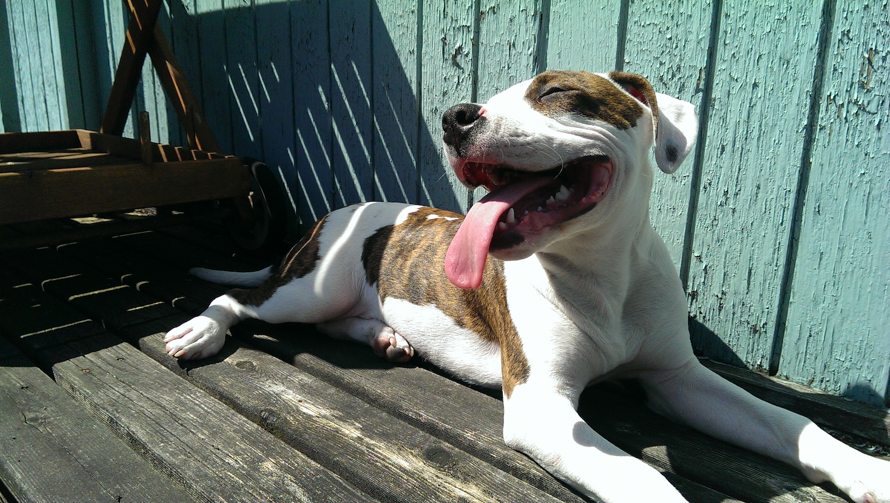

Safer Conception Intervention for Partners
Research, Design, and Prototype Development
SCIP is part of an NIH-funded program "to develop a coordinated, client-centered, evidence-based, risk-reduction 'safer conception' intervention" program for HIV-1 serodiscordant couples in Kenya. Using data from regular meetings with the Principal Investigator and a former clinician, I am helping design and develop a tablet application prototype for user evaluation and usability testing. [As of 3/25] the prototype is being testing in the trial clinic in Thika, Kenya.
The application visualizes data supplied by participanting couples through SMS and is used by clinicians during their visits to identify peak feritility days and monitor PrEP (Pre-exposure prophylaxis) and ART (Antiretroviral therapy) adherence.
